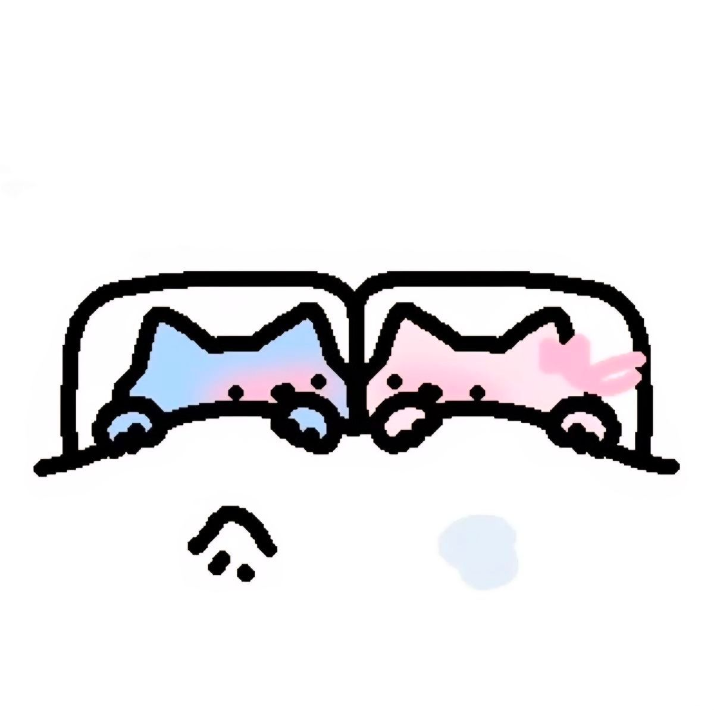

These are the number of times we've shared our favourite line,
I know teri favourite line toh "Aaj lunga Teri" hi h but whatever.
Mai bass yeh chahti hu ki you know eventhough hum bade ho jayenge,
shyd mai aur bore karne lagu tumhe, lekin mera pyaar kbhi kam nahi hoga